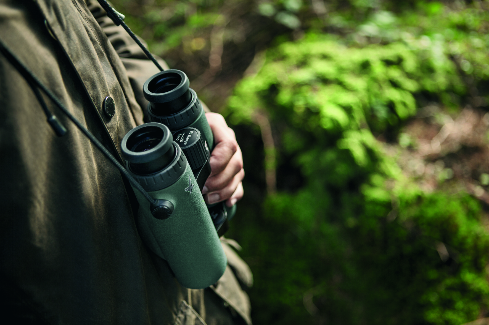
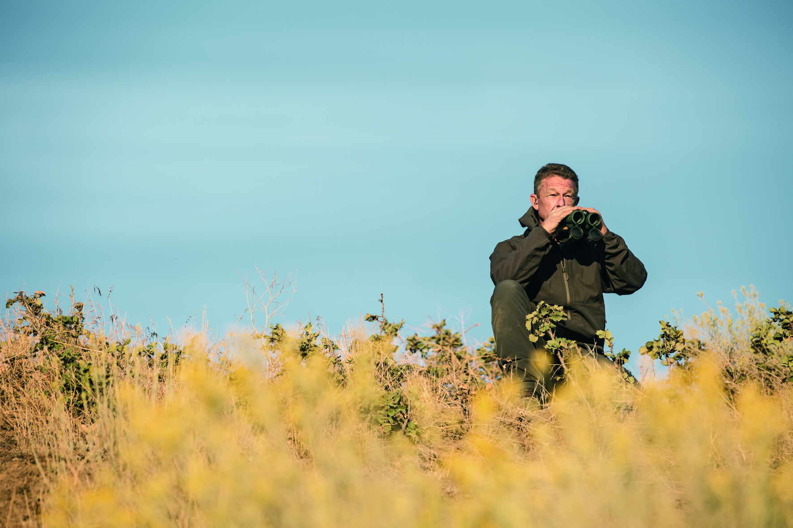

SWAROVSKI OPTIK
About Swarovski Optik …
Every company needs a stable, secure foundation that it can build on.
SWAROVSKI OPTIK regards tradition, origin, quality awareness, entrepreneurial boldness, innovativeness, absolute devotion to service and product functionality as the core values guiding all its actions. These principles have evolved from within the company at SWAROVSKI OPTIK and they are put into practice every day by all our staff.
When you explore the world, you want to savor new, exciting impressions. This is what makes traveling a lasting, enriching experience in life, and binoculars serve to enhance this experience. They enable you to discover impressive details that would otherwise remain hidden. This is how you see the world through new eyes.
Product Range
LIMITLESS PERFECTION
The launch of the EL binoculars by SWAROVSKI OPTIK marked a milestone in long-range optics. These binoculars have now been further enhanced following intensive development and a great deal of dedication. The result of these efforts is the best EL Family ever. The crystal-clear optics provided by SWAROVISION technology and the unique ergonomic design, including the EL wrap-around grip, are enhanced by the new, perfectly harmonized FieldPro package. This offers an unprecedented level of comfort while observing wildlife, thanks to the new carrying strap and objective lens and eyepiece covers. This creates an almost magical interaction between optics, ergonomics, and functionality, rolled into a masterly crafted design.


BEING THERE IS WHAT COUNTS
Next time you’re traveling, going for a walk, or out and about at the weekend, why not take a lightweight pair of compact binoculars from the CL family with you. Suddenly you’ll be able to see and experience much more, such as animals and plants that you wouldn’t have even noticed or details on buildings or landmarks that would otherwise have remained hidden. You can take in all at once the entire stage at an open-air event, or look right to the other end of the valley. This will, quite literally, broaden your horizons.
